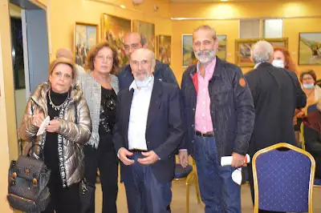
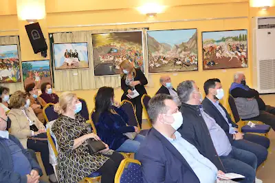
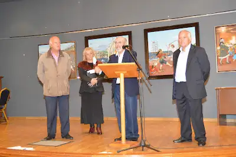

ΕΚΘΕΣΗ: Η ΓΥΝΑΙΚΑ ΣΤΗΝ ΕΠΑΝΑΣΤΑΣΗ ΤΟΥ 1821
Από 4 έως 15 Νοεμβρίου 2021
Μουσείο Εθνικής Αντίστασης Ηλιούπολης (Μαρ. Αντύπα & Σοφ. Βενιζέλου)
Δελτίο τύπου
Την Πέμπτη 4-11-2021 και ώρα 19.00 πραγματοποιήθηκαν με επιτυχία τα εγκαίνια της έκθεσης του Νώντα Ρεντζή "Η Γυναίκα στην Επανάσταση" παρουσία πλήθους κόσμου, στο Μουσείο Εθνικής Αντίστασης Ηλιούπολης μ' όλα τα προβλεπόμενα μέτρα υγειονομικού πρωτοκόλλου.
Στα εγκαίνια παρευρέθησαν τιμώντας την περιοδική έκθεση:
Οι κ.κ. Δήμαρχος Ηλιούπολης Γεώργιος Χατζηδάκης, Αικατερίνη Χώματα Αντιδήμαρχος Παιδείας Ηλιούπολης, Ιωάννης Αντζινάς Αντιδήμαρχος Καθαριότητας Ηλιούπολης, Αικατερίνη Μαρκουλάκη Προέδρος της Επιτροπής Εορτασμού για το 2021, Στάθης Ψυρρόπουλος Πρόεδρος της Παράταξης "Πρώτα η Ηλιούπολη", Γαβριήλ Αραμπατζής Πρόεδρος της Παράταξης "Η Πόλη που θέλω", Ταμβάκος Δημήτριος Δημοτικός Σύμβουλος Ηλιούπολης "Πάμε Μπροστά", Δημήτρης Καλαντίδης Πρόεδρος της Ομοσπονδίας Κινηματογραφικών Λεσχών Ελλάδος, Αργυρώ Πίκουλα Πρόεδρος της Ιωνικής Στέγης Ηλιούπολης, Χάιδω Μουχασίρη Πρόεδρος της Δ.Ε. του παραρτήματος Ηλιούπολης της Ένωσης Γυναικών Ελλάδας, Ελένη Κατωμελίτη μέλος του Πανελλαδικού Δ.Σ. της Ένωσης Γυναικών Ελλάδας, Στέλιος Μαρούλης Πρόεδρος της Ένωσης Καλλιτεχνών και Λογοτεχνών Ηλιούπολης και σύσσωμο το Δ.Σ. της Ένωσης, οι εικαστικοί Νάντια Μπαράκου, Σταυρούλα Αλεξανδράτου, Κατερίνα Περήφανου, Νικόλαος Διάκος, ο ερμηνευτής Κώστας Παυλόπουλος, Χριστίνα Σερέτη και Ειρήνη Μπολινακη Ανεξάρτητοι, Ευαγγελία Μπάκολη "Πρώτα η Ηλιούπολη", Βάσω Κοτσάλου Ραδιοφωνική Παραγωγός Δημοτικού Ραδιοφώνου Ηλιούπολης, Γεώργιος Λένης Πρόεδρος της Πανελλήνιας Εταιρείας Λόγου και Τέχνης, Νίκος Αντζινάς Πρόεδρος Συλλόγου Αρκάδων Ηλιούπολης, Έφη Αναστασίου Πρόεδρος Δωματίου Κύριων Ηλιούπολης "Η Πρόοδος", Χρυσάνθη Αρμούτη Υπεύθυνη του Πολιτιστικού Συλλόγου Αρκάδων, Γραβάνη Μάχη και Γκούβα Γεωργία από την παράταξη "Πρώτα η Ηλιούπολη" καθώς και φίλων μελών της οικογένειας που ανταποκρίθηκε στο κάλεσμα.


Η έκθεση είναι επισκέψιμη για το κοινό Δευτέρα έως Παρασκευή 09.30-14.00 & 18.00-21.00, Σάββατο 10.00 -14.00 & 18.00-21.00 τηρώντας τα απαραίτητα μέτρα προστασίας.
Μ' αυτήν την επετειακή έκθεση του ο Νώντας Ρεντζής μας θυμίζει κάθε ιστορική στιγμή που πέμπει προς τα πίσω τη σκέψη όλων που οδηγεί στον ξεσηκωμό των αδούλωτων Ρωμιών, όλων εκείνων των καταπιεσμένων και ανυπότακτων προγόνων μας, των ελεύθερων πολιορκημένων και πάλιν ευαγώγως και πειθαρχικώς ο λαογράφος, μας μεταφέρει στα πολλά θέατρα των άνισων μαχών, όπου η καρδιά, το απύθμενο φιλότιμο του Έλληνα, η πίστη στον Χριστό, η αμίμητη αγάπη για την Πατρίδα, ο φανοστάτης που υποδείκνυε το δρόμο του προς τη θυσία, εν τέλει, το ποθητό αποτέλεσμα.

